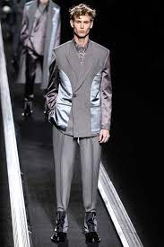
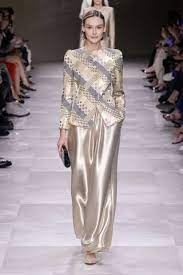

🌟 Colores y Estilos en Alta
Este 2025 la moda apuesta por colores vibrantes como el verde esmeralda, el fucsia y el azul eléctrico, combinados con tonos neutros que aportan equilibrio. El estilo minimalista sigue siendo tendencia, pero con un toque más atrevido, mezclando texturas metálicas y tejidos ecológicos.
 👗 Moda Sostenible
Las marcas de lujo y de calle apuestan cada vez más por la moda sostenible.
El uso de materiales reciclados, prendas de segunda mano y el movimiento
slow fashion
han tomado gran relevancia. El objetivo es vestir con estilo
sin dejar de lado el cuidado del planeta.
🎥 Video Inspiración de Estilo
A continuación te compartimos un video con un resumen de las pasarelas internacionales que marcarán la temporada 2025: